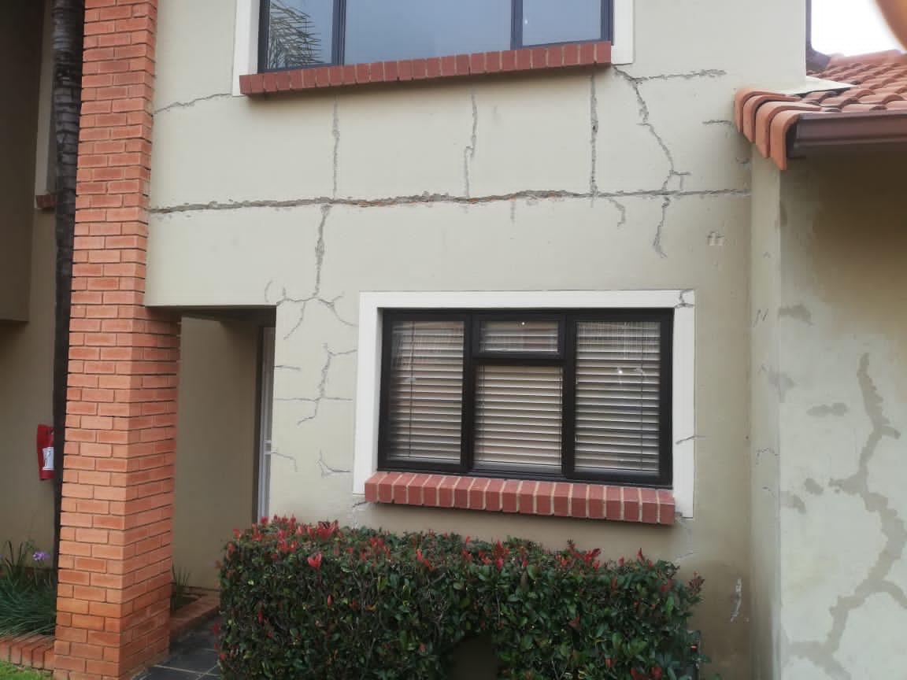
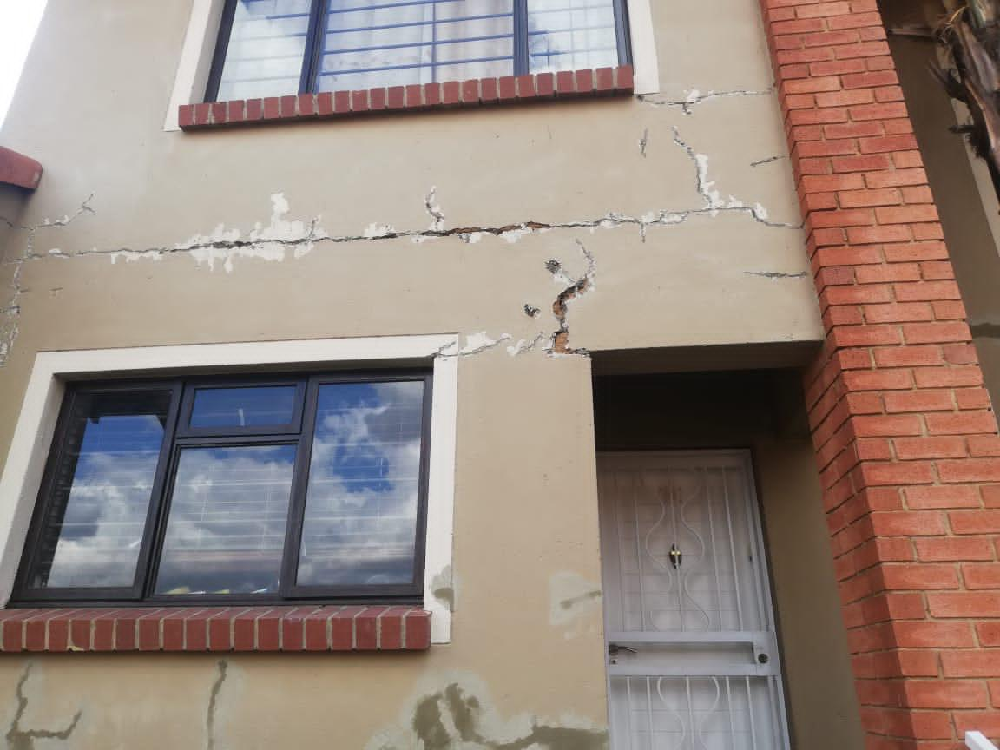
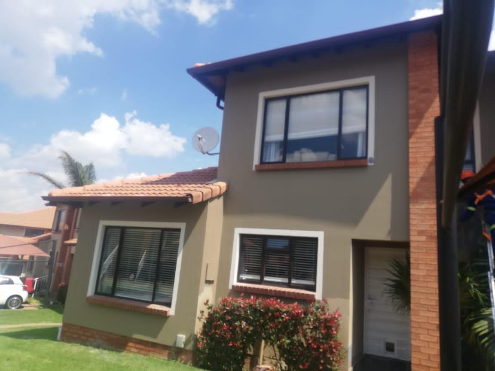
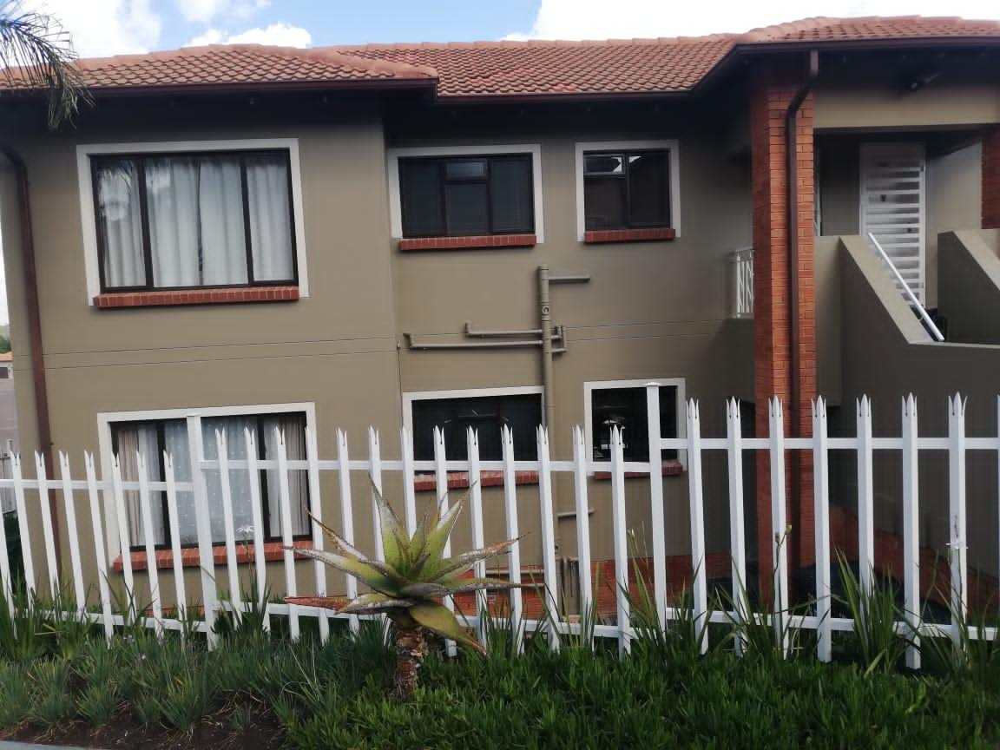

Residential Exterior Remediation & Restoration
Comprehensive crack repair and full exterior repaint to restore the structural integrity and aesthetic value of a private residential unit.

1. The Challenge: Structural Damage & Aesthetic Degradation
The unit was suffering from extensive structural cracks across the façade, a common issue stemming from foundation movement or water ingress over time. These cracks posed both a structural concern and significantly degraded the property's curb appeal and value. The client required a solution that would not just cosmetically cover the damage, but structurally remedy the cracks and provide a durable, long-lasting exterior finish.
2. Tholusol’s Strategy & Execution
A. Precision Crack Remediation
Our work began with a full assessment to identify active structural points. We then implemented a two-stage crack filling process: opening up the cracks, cleaning, applying a bonding agent, and filling them with specialized flexible polymer-modified fillers to accommodate future minimal movement without cracking the top layer.
B. Preparation and Surface Sealing
After structural repair, the entire surface was scraped, washed, and primed. A quality masonry primer was applied to ensure maximum adhesion for the new top coat and seal the surface against future moisture damage. This meticulous preparation is key to a long-lasting paint finish.
Project Progression Gallery




Specialized attention was given to sealing all crack areas before final painting to ensure long-term stability.
3. Outcomes: Value Delivered
“The house looks brand new! Tholusol’s team was professional, addressing the cracks thoroughly, not just painting over them. We're very pleased with the speed and the quality of the exterior restoration.”
— Residential Client, Gauteng Region